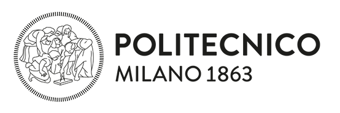
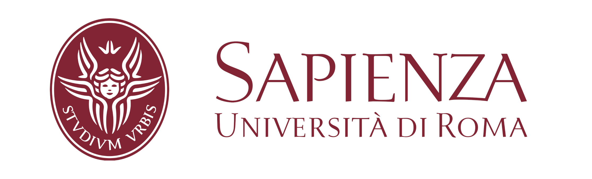

<div class="container marketing py-5">
    <div class="row text-center">
      <div class="col-lg-6 mb-4 mb-md-0">
        
        <!-- <h3 class="fw-normal py-5">Politecnico di Milano</h3> -->
        <h2>Mario Polino</h2>
        <h4>PI / Head of research unit</h4>
        <p class="py-2"><a class="btn btn-secondary" href="https://jinblack.it/">Additional info &raquo;</a></p>
      </div><!-- /.col-lg-4 -->
      <div class="col-lg-6 mb-4 mb-md-0">
        
        <!-- <h3 class="fw-normal py-5">Sapienza Università di Roma</h3> -->
        <h2>Emilio Coppa</h2>
        <h4>Co-PI / Head of research unit</h4>
        <p class="py-2"><a class="btn btn-secondary" href="http://ecoppa.github.io/">Additional info &raquo;</a></p>
      </div><!-- /.col-lg-4 -->
    </div><!-- /.row -->
</div>